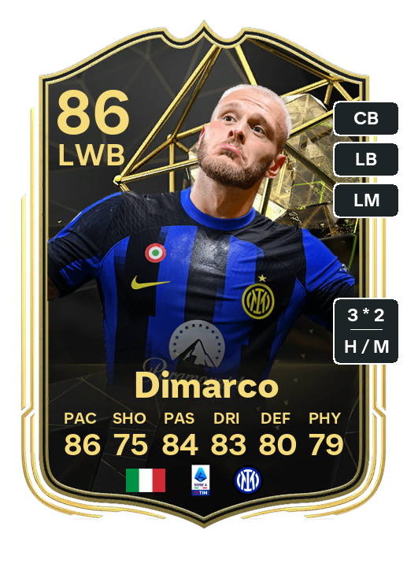
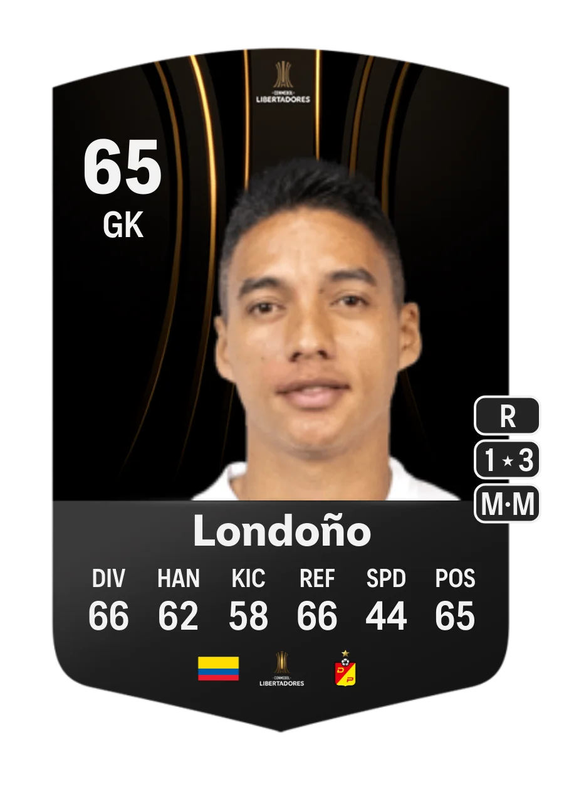
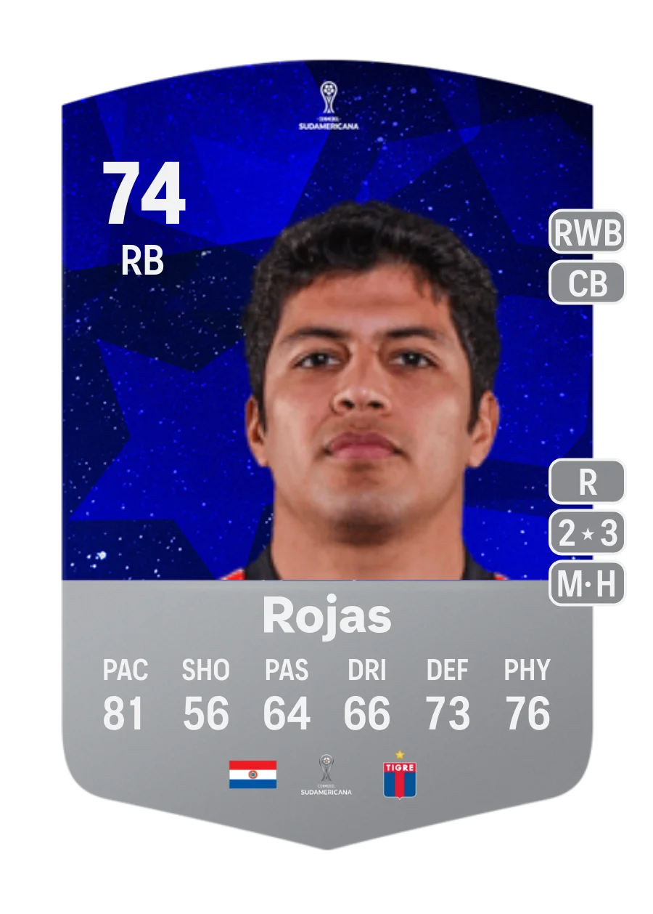
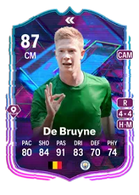
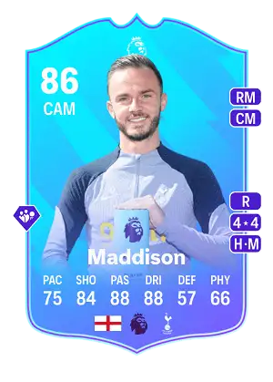
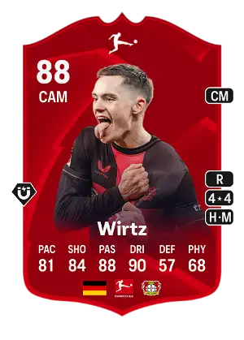
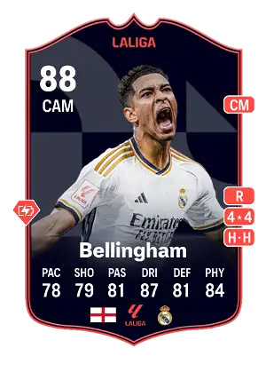
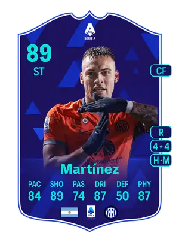
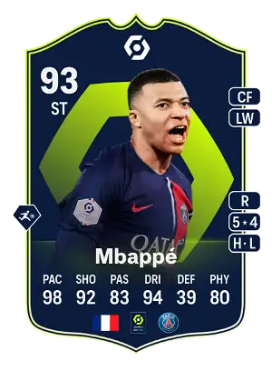
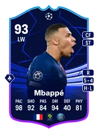

Cartas Comunes:
Son las más frecuentes y representan a jugadores de todas las ligas y competiciones incluidas en FIFA.
No tienen características especiales y no brillan.
Clasificación según rareza:
- Bronce: Valoración de 64 o menos.
- Plata: Valoración entre 65 y 74.
- Oro: Valoración de 75 en adelante.

Cartas Únicas:
Tienen un brillo especial y sirven para distinguir a los jugadores más destacados.
Pueden ser de diferentes tipos:
Oro brillantes:
las carta clasicas de oro pero brillantes

Equipo de la Semana (TOTW):
Reconocimiento al desempeño y logros de jugadores durante una jornada específica.

CONMEBOL Libertadores:
Artículo especial para participantes en la competición CONMEBOL.

CONMEBOL Sudamericana:
Artículo especial para participantes en la competición CONMEBOL.

Flashback:
Rememora una temporada estelar de un jugador específico.

Batalla (Showdown):
Versiones especiales de jugadores que se enfrentan en un proximo partido uno de los dos
según el resultado del partido uno de los dos sube su media.
.webp)
Cartas de Jugador del Mes:
Destacan al jugador más destacado de cada liga en un mes específico.
Ejemplos:
Premier League:
Jugador del mes destacado de la Premier League.

Bundesliga:
Jugador del mes destacado de la Bundesliga.

LaLiga Santander:
Jugador del mes destacado de LaLiga Santander.

Serie A TIM:
Jugador del mes destacado de la Serie A TIM.

Ligue 1:
Jugador del mes destacado de la Ligue 1.

Futuras Estrellas (Future Stars):
Grandes promesas emergentes con valoraciones mejoradas basadas en su potencial.

Equipo en Fase de Grupos (Team of the Group Stage):
Jugadores destacados de las competiciones europeas.

Rumbo a las Eliminatorias (Road to Knockouts):
Participación en la Champions League, Europa League y Europa Conference League.

Rumbo a la Final (Road to the Final):
Artículos dinámicos por participar en las fases finales de las competiciones europeas.

Equipo del año(TOTY):
Los 11 mejores jugadores y jugadoras de todo el año,
elegidos por la comunidad de EA FC, tambien sacaron iconos toty.

Aniversario de FUT (FUT Birthday):
Mejoras de 5 estrellas para jugadores seleccionados,
conmemorando el aniversario de FIFA Ultimate Team12.

Equipo de la Temporada (TOTS):
Los 11 mejores jugadores de la temporada, con enormes mejoras frente a las cartas básicas.

Estas cartas aun no han salido pero aqui les dejo las del año pasado
Evoluciones:
En esta edición, las cartas no son estáticas. A diferencia de anteriores versiones, podrás modificar algunos de los
atributos de las cartas gracias a la mecánica de Evoluciones.